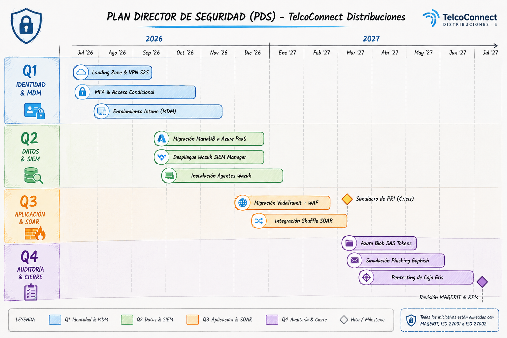

Gobierno de Seguridad y Migración Híbrida Azure
Plan de Transición Tecnológica y Gobierno de Seguridad Híbrida para la empresa TelcoConnect Distribuciones, migrando progresivamente servicios a la nube de Microsoft Azure en 12 meses.
Identidad y Perfil del Negocio
TelcoConnect Distribuciones es una empresa mediana de 40 trabajadores que opera como distribuidor autorizado oficial de una gran operadora móvil. Su actividad principal es la captación de clientes de fibra/móvil, la tramitación y activación de contratos de líneas telefónicas, y la venta/distribución de dispositivos y accesorios de red en tiendas físicas y en movilidad.
Estructura Organizativa de la Plantilla
| Departamento | Rol Específico | Cant. | Dependencia | Equipamiento TI Asignado |
|---|---|---|---|---|
| Dirección General | Gerente | 1 | Junta de Socios | Portátil y Tablet corporativos para movilidad. |
| Mandos Intermedios | Jefes de Departamento (Ventas, Tramitación, Administración) | 3 | Gerente | 3 Portátiles corporativos. |
| Ventas Externas | Comerciales en campo | 20 | Jefe de Ventas | 20 Portátiles y 20 Móviles corporativos. |
| Operaciones | Tramitadoras de contratos | 6 | Jefe de Tramitación | 6 PCs de sobremesa (Oficina Central en red local). |
| Gestión Corporativa | Administrativas de RRHH / Contabilidad | 2 | Jefe de Administración | 2 PCs de sobremesa en Oficina Central. |
| Puntos de Venta Físicos | Dependientas de tienda | 8 | Jefe de Ventas | 4 PCs de sobremesa (1 PC por tienda en 4 tiendas físicas con turnos rotativos). |
| Soporte Técnico Interno | Técnico Comercial y Mantenimiento de Equipos | 1 | Gerente | 1 PC sobremesa y 1 Portátil de gestión (40h semanales). Desempeñado por el autor del proyecto. |
| Seguridad Externa | Equipo de Seguridad Externo (Gijón) | - | Gerente | Servicio de consultoría estratégica y SOC gestionado (vCISO + SOC Gijón). |
Detalle de los Activos Críticos para la Migración
La infraestructura local de TelcoConnect reside originalmente en un único servidor físico obsoleto en la oficina central, con costes de mantenimiento inviables debido a fallos de hardware. Los activos críticos que se migrarán a Azure son:
- Aplicación de Tramitación (VodaTramit): Aplicación web de línea de negocio (Next.js/Spring Boot) empleada por las 6 tramitadoras y las dependientas de las tiendas para tramitar contratos, procesar altas de SIMs y solicitar portabilidades.
- Base de Datos y Almacén (MariaDB): Base de datos de 550 GB con el control de inventario de terminales móviles, SIMs, transacciones diarias y datos de clientes.
- Logs de Auditoría y Accesos: Archivos históricos de operaciones del servidor y accesos de comerciales que requieren almacenamiento centralizado por cumplimiento y control de fraude.
Arquitectura Híbrida y Transición de Servidores
Para adaptar la política de servidores tradicional ("Servidor 1: Frontal DMZ" y "Servidor 2: Interno + DB") al entorno híbrido, se realiza la siguiente distribución de servicios en Azure:
Sustitución del Servidor 1 (DMZ Frontal Perimetral)
La función de Nginx DMZ se traslada a **Azure Application Gateway con WAF activo (Capa perimetral L7 - VodaTramit)**. Este gateway actúa como única puerta de enlace pública, aplicando reglas de prevención ante inyecciones SQL que comprometan los datos y controlando la expiración de cookies de sesión. Centraliza la terminación SSL/TLS usando certificados almacenados en Azure Key Vault.
Sustitución del Servidor 2 (Entorno Interno Wazuh + Base de Datos)
Las funciones internas del Servidor 2 se segregan lógicamente dentro de una **Azure Virtual Network (VNet)** protegida por Grupos de Seguridad de Red (NSG) restrictivos bajo directivas deny-by-default:
- Subred de Aplicaciones (Subnet-App): Aloja la lógica interna de VodaTramit en VMs Linux optimizadas, que solo aceptan tráfico web proveniente del Azure Application Gateway.
- Subred de Datos (Subnet-Data): Sustituye el almacén local por **Azure Database for MariaDB PaaS**, con acceso exclusivo privado a través de **Private Endpoint** desde la subred de aplicaciones (Puerto 3306).
- Subred de Seguridad (Subnet-Sec): Hospeda la máquina virtual del servidor **Wazuh SIEM Manager**, centralizando los eventos de auditoría y logs procedentes de los agentes locales.
Mecanismos de Conectividad Híbrida Segura
Dada la distribución física (oficina, 4 tiendas, comerciales en movilidad), la conectividad se divide en dos canales:
- VPN Site-to-Site (S2S): Túneles IPSec cifrados permanentes (AES-256) desde el enrutador-firewall de la oficina central y las 4 tiendas físicas hacia el **Azure VPN Gateway**, permitiendo un acceso privado transparente a VodaTramit.
- VPN Point-to-Site (P2S): Conexiones individuales mediante cliente VPN de Azure para los 20 comerciales móviles y el Gerente. Solo se autoriza el establecimiento del túnel si el dispositivo cumple con los parámetros de salud de la consola **Microsoft Intune** (antivirus activo, MFA habilitado y cifrado BitLocker).
Adaptación de Roles, Distribución y Matriz RACI
Para una empresa de 40 trabajadores con un único técnico (quien además realiza labores comerciales de cara a la captación de contratos de la operadora), es materialmente imposible asumir la monitorización continua de seguridad. Asimismo, para evitar conflictos de interés en las auditorías de accesos a la red, se externalizan las funciones de seguridad estratégica y monitorización 24/7 en colaboración con una **empresa externa especialista en seguridad y SOC con sede en Gijón**:
Consultor estratégico externo. Es responsable de actualizar el análisis cuantitativo MAGERIT v3, supervisar el cumplimiento de políticas de acceso a Azure, redactar directivas y coordinar los playbooks de respuesta a incidentes.
Empresa externa de Gijón que opera como MSSP. Monitoriza logs del WAF en Azure, eventos del agente Wazuh y accesos al VPN Gateway. Alerta al técnico interno de anomalías con instrucciones guiadas.
Rol del propio autor. Encargado del mantenimiento físico de equipos de tiendas, gestión de endpoints remotos mediante Intune y ejecución en sitio de las directivas operativas guiadas por el SOC de Gijón.
Matriz de Asignación de Responsabilidades (RACI)
| Tarea de Gobierno / Actividad | vCISO (Ext.) | SOC Gijón (Ext.) | Técnico IT (Int.) | Gerente (Int.) |
|---|---|---|---|---|
| Monitoreo de alertas SIEM (Wazuh) e intrusiones | C | R | I | I |
| Bloqueo y aislamiento de IPs en WAF y NSG de Azure | C | C | R | A |
| Gestión de perfiles MDM (Intune) en dispositivos | C | I | R | A |
| Borrado remoto de datos en portátiles/móviles robados | C | I | R | A |
| Parcheado y mantenimiento de PCs de tienda | I | I | R | A |
| Activación de playbooks de contención de crisis | R | C | C | A |
Cuerpo de la Política Documentada
A continuación se expone de forma directa la tabla de políticas de control de acceso y protocolo de asignación de roles formalizados para TelcoConnect Distribuciones:
POL-SEG-04: Política Híbrida de Accesos y Asignación de Roles de Seguridad
Esta política define las directrices y responsabilidades para salvaguardar los activos críticos alojados en Azure y en el perímetro físico de las 4 tiendas y la oficina central de TelcoConnect. Aplica a toda la plantilla (40 empleados).
- MFA Obligatorio: Todo acceso al portal Azure y a la herramienta de tramitación VodaTramit requiere doble factor TOTP activo en Microsoft Entra ID.
- Dispositivos Registrados (Intune): Solo se autoriza la conexión VPN P2S a dispositivos enrolados en el MDM corporativo que cumplan con la política de seguridad mínima.
- Aislamiento de Tiendas: El tráfico de red de tiendas físicas solo puede acceder al entorno Azure mediante túneles seguros IPSec S2S del VPN Gateway.
Cualquier cambio en la configuración de cortafuegos perimetrales, NSG o el WAF en Azure requiere la aprobación previa y firma digital del vCISO y autorización del Gerente, siendo ejecutado únicamente por el Técnico de Mantenimiento local.
Protocolo de Actuación y Contención
Ante la sospecha de una intrusión perimetral en la aplicación VodaTramit o el robo de un portátil de comerciales externos, se activa el protocolo estructurado en tres fases coordinado con el SOC de Gijón:
El SOC de Gijón detecta anomalías y notifica al Técnico Interno. Éste bloquea de inmediato la cuenta del usuario en Entra ID y ejecuta el aislamiento de la VM en Azure modificando el NSG. En caso de robo de portátiles, se lanza una directiva de borrado remoto instantáneo de datos vía Intune.
Se eliminan los procesos maliciosos en la VM. El Técnico de Mantenimiento junto con el vCISO aplican en caliente parches de software para cerrar la inyección del atacante. Se revocan de forma inmediata todas las credenciales y tokens SAS temporales de Blob Storage.
Se restauran los sistemas utilizando las copias de seguridad de Azure Backup de las últimas 24h. Se reestablecen los servicios privados y se activan auditorías de integridad (FIM) de Wazuh para comprobar que el entorno está libre de persistencias del atacante.
Capítulo de Política de Seguridad e Incidentes Formalizado
Se ha elaborado y aprobado formalmente el capítulo de la política que describe las directivas de acceso mínimo, la gestión de identidades corporativas en Entra ID y el plan de resiliencia de copias de seguridad para TelcoConnect Distribuciones.
Evaluación de Riesgos Cuantitativa (MAGERIT v3)
La cuantificación del riesgo estima el producto de las variables de Impacto (I) y Probabilidad (P) en escalas de 1 a 5, definiendo las salvaguardas idóneas para cada activo crítico del entorno híbrido:
Matriz de Evaluación de Activos y Riesgos Híbridos (MAGERIT v3)
Análisis cuantitativo de riesgos estimando la severidad del impacto sobre los activos de información en base a amenazas híbridas identificadas:
| ID | Activo Crítico | Amenaza Identificada | I | P | Riesgo | Salvaguarda y Control Propuesto |
|---|---|---|---|---|---|---|
| ACT-01 | Portal VodaTramit (Web) | Inyección SQL o RCE en alta de contratos | 5 | 3 | 15 (Muy Alto) | Azure Application Gateway con WAF en modo de prevención activa frente a reglas OWASP. |
| ACT-02 | Base de Datos (MariaDB PaaS) | Modificación de stock o robo de credenciales | 4 | 3 | 12 (Alto) | Restricción por Private Endpoint a la subred de App y auditoría periódica de cambios en BD con Wazuh. |
| ACT-03 | Portátiles y Móviles | Robo de terminales con datos de clientes en tránsito | 4 | 4 | 16 (Muy Alto) | Cifrado completo de disco BitLocker, MFA en Entra ID y borrado remoto automatizado mediante Microsoft Intune. |
| ACT-04 | PCs de Tienda y Oficina | Infección Ransomware por USB o correo | 5 | 3 | 15 (Muy Alto) | Instalación del Agente de Wazuh con respuesta activa para bloqueo de procesos y GPOs de puertos USB restrictivas. |
| ACT-05 | VPN Híbrido (S2S) | Caída del túnel que incomunique ventas en tiendas | 4 | 3 | 12 (Alto) | Configuración de enrutador con redundancia celular 4G/LTE de respaldo automática en tiendas físicas. |
| ACT-06 | Portal de Azure | Suplantación de credenciales del técnico | 5 | 3 | 15 (Muy Alto) | Acceso Condicional en Entra ID restringiendo IPs de administración a rangos autorizados y uso de MFA. |
| ACT-07 | Monitorización (Wazuh SIEM) | Desactivación o caída de auditorías de logs | 3 | 2 | 6 (Medio) | Implementación de alertas de inactividad de envío de agentes de forma remota monitorizadas por el SOC de Gijón. |
| ACT-08 | Flujos Automatizados (SOAR) | Errores en bloqueos que aíslen dispositivos legítimos | 3 | 2 | 6 (Medio) | Mantenimiento de listas blancas para IPs estáticas de oficina y tiendas antes de la detonación de playbooks. |
Plan Director de Seguridad y Transición Azure
Para coordinar el hardening y asegurar que las vulnerabilidades se mantengan mitigadas a largo plazo, el Plan Director de Seguridad (PDS) a 12 meses se fusiona de forma progresiva con el plan de migración técnica en Azure:
Q1: Landing Zone, Identidad y Gestión de Dispositivos MDM (Meses 1-3)
- Hitos Técnicos: Despliegue de la Landing Zone en Azure, configurando la VNet privada y las subredes (App, Data, Sec). Levantamiento de la VPN Site-to-Site (S2S) desde la Oficina Central hacia el Azure VPN Gateway.
- Seguridad (vCISO + Técnico IT): Enrolamiento global en Microsoft Intune de los 20 portátiles/móviles comerciales, tablet de gerencia y equipos de oficina, configurando BitLocker y borrado remoto. Federación de accesos administrativos mediante Entra ID con MFA obligatorio.
Q2: Migración de BD de Almacén y Monitorización Activa (Meses 4-6)
- Hitos Técnicos: Migración de la base de datos MariaDB (550 GB de inventario y stock) a Azure Database for MariaDB PaaS con Private Endpoint. Despliegue del servidor Wazuh SIEM Manager VM en la subred de seguridad.
- Seguridad (Técnico IT + SOC Gijón): Instalación de los agentes Wazuh en todos los PCs locales de tiendas y oficina, y portátiles comerciales remotos. Activación de la auditoría de integridad de archivos (FIM) en directorios de contratos.
Q3: Migración de Aplicación VodaTramit e Integración SOAR (Meses 7-9)
- Hitos Técnicos: Migración del portal web VodaTramit (Next.js/Spring) a VMs Linux en la subred privada. Configuración de Azure Application Gateway con WAF perimetral activo frente a inyecciones SQL/L7.
- Seguridad (vCISO + Técnico IT + SOC Gijón): Conexión del orquestador Shuffle SOAR con Wazuh mediante webhooks. Despliegue de playbook automatizado: si se detectan múltiples inicios de sesión fallidos o IPs concurrentes imposibles de un comercial, el SOAR suspende temporalmente su cuenta en Entra ID y alerta al Técnico IT.
Q4: Aseguramiento de Blob, Auditoría Externa y Concienciación (Meses 10-12)
- Hitos Técnicos: Migración de expedientes de contratos a Azure Blob Storage con firmas SAS de acceso temporal limitado a 1 hora.
- Seguridad (vCISO): Campaña interna de phishing controlado con Gophish dirigida a dependientas de tiendas, tramitadoras y comerciales móviles. Auditoría externa de caja gris (Pentesting de red híbrida y WAF) y actualización del cálculo MAGERIT v3.
Métricas e Indicadores de Éxito de Gobierno
Para supervisar el estado de resiliencia y la seguridad del entorno híbrido de TelcoConnect, se definen los siguientes indicadores clave de rendimiento (KPIs):
| Indicador de Éxito | Fórmula de Cálculo | Frecuencia | Meta | Responsable |
|---|---|---|---|---|
| Cumplimiento de Dispositivos MDM | Dispositivos Cumpliendo Políticas / Total Dispositivos Registrados | Mensual | 100% | Técnico Comercial y Mantenimiento |
| Tasa de Cobertura MFA | Cuentas con MFA Activo / Total Cuentas Activas | Mensual | 100% | Técnico Comercial y Mantenimiento |
| Efectividad Preventiva WAF | Peticiones Maliciosas Bloqueadas / Total Peticiones Maliciosas Detectadas | Mensual | > 99% | SOC Gijón (Proveedor SOC Externo) |
| Tiempo Medio de Mitigación (MTTR) | Tiempo Total en Mitigar Incidentes / Total de Incidentes de Red | Trimestral | < 15 min | SOC Gijón + Shuffle SOAR |
| Resistencia a la Ingeniería Social | Usuarios que Clican o Envían Datos / Total Correos de Simulación | Semestral | < 5% | vCISO (Estrategia) |
| Disponibilidad del Canal VPN Híbrido | Tiempo de VPN Online / Tiempo Total del Periodo | Mensual | > 99.9% | Técnico Comercial y Mantenimiento |
Cronograma de Planificación y Diagrama de Gantt del PDS
Cronograma visual elaborado para los 12 meses de planificación donde se detallan los hitos técnicos de migración y la implementación de controles del PDS (hardening, monitorización y concienciación):
